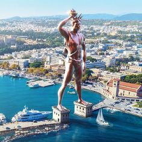

Колосс Родосский

В 305 году до нашей эры остров (и город) Родос вознамерился захватить полководец Деметрий. Как он ни старался, ничего у него не получилось. В честь одержанной победы родосцы решили возвести гигантскую статую бога Гелиоса, которого считали покровителем острова.
Проект был уникален тем, что статую решили делать из бронзы. Существовавшая до тех пор технология бронзового литья шедеврами похвастаться не могла. Но родосский скульптор Харес сумел сделать невероятное. Он отлил частями, а потом собрал гиганта высотой 35 метров, слава о котором мгновенно (со скоростью передвижения парусных и вёсельных кораблей) разнеслась по всему Средиземноморью.
К сожалению, простоял Колосс совсем недолго. Через 56 лет разрушительное землетрясение почти уничтожило город. Рухнула, разбилась и гигантская статуя. Обломки её лежали на земле ещё около тысячи лет, пока захватившие Родос арабы не продали их как бронзовый лом заплывшему на остров купцу.
Как именно выглядела бронзовая скульптура, ныне точно неизвестно. Предположений много. Сейчас на острове Родос туристам предлагают массу вариантов изображений. В принципе, каждое из них выглядит впечатляюще.